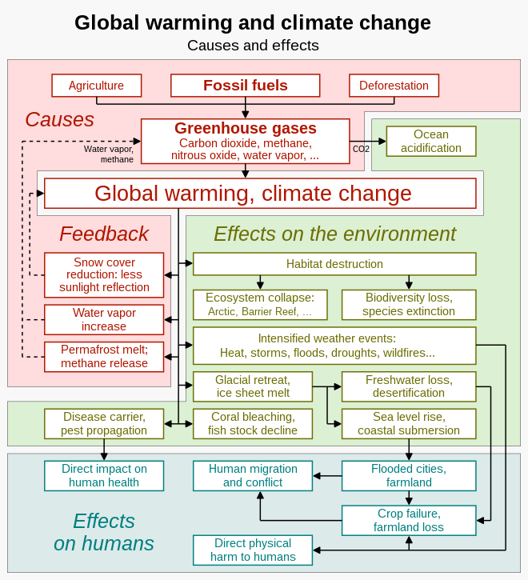

The changes in climate are not uniform across the Earth. In particular, most land areas have warmed faster than most ocean areas. The Arctic is warming faster than most other regions. Night-time temperatures have increased faster than daytime temperatures.
What would happen if emissions of CO2 stopped abruptly and there was no use of negative emission technologies? The Earth's climate would not start moving back to its pre-industrial state. Temperatures would stay at the same high level for several centuries. After about a thousand years, 20% to 30% of human-emitted CO2 would remain in the atmosphere. The ocean and land would not have taken them. This would commit the climate to a warmer state long after emissions have stopped.[
Experts can often attribute the intensity of individual heat waves to global warming. Some extreme events would have been nearly impossible without human influence on the climate system. A heatwave that would occur once every ten years before global warming started now occurs 2.8 times as often.
Precipitation is when water vapour condenses out of clouds, such as rain and snow.[50]: 1057 Higher temperatures increase evaporation and surface drying. As the air warms it can hold more water. For every degree Celsius it can hold 7% more water vapour.[50]: 1057 Scientists have observed changes in the amount, intensity, frequency, and type of precipitation.[51] Overall, climate change is causing longer hot dry spells, broken by more intense rainfall.[52]: 151, 154
There are many effects of climate change on oceans. One of the main ones is an increase in ocean temperatures. More frequent marine heatwaves are linked to this. The rising temperature contributes to a rise in sea levels. Other effects include ocean acidification, sea ice decline, increased ocean stratification and reductions in oxygen levels. Changes to ocean currents including a weakening of the Atlantic meridional overturning circulation are another important effect.[66] All these changes have knock-on effects which disturb marine ecosystems. The main cause of these changes is climate change due to human emissions of greenhouse gases. Carbon dioxide and methane are examples of greenhouse gases.
Between 1993 and 2018, thermal expansion of water accounted for 42% of sea level rise. Melting temperate glaciers accounted for 21%, with Greenland accounting for 15% and Antarctica 8%.[76]: 1576 Sea level rise lags changes in the Earth's temperature. So sea level rise will continue to accelerate between now and 2050 in response to warming that is already happening.[77] What happens after that will depend on what happens with human greenhouse gas emissions.
Effects of Climate Change by Wikipedia
Quiche by JJ Koumaglo.
Eggs Benedict by Zeke Thoreson.
Mango by Sami Lamichhane.